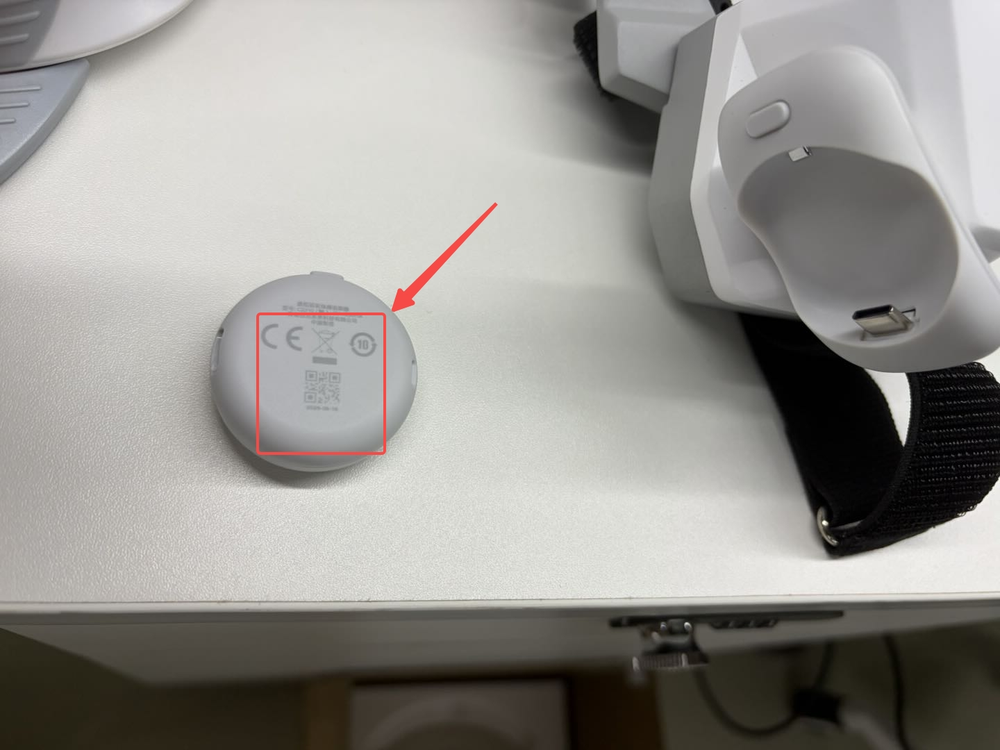
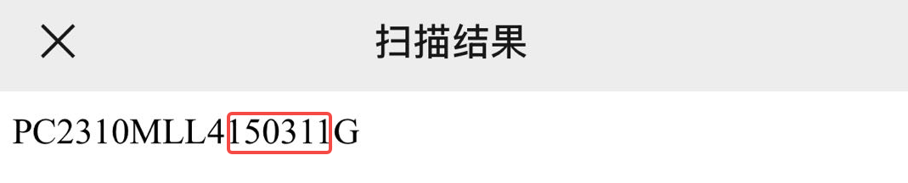
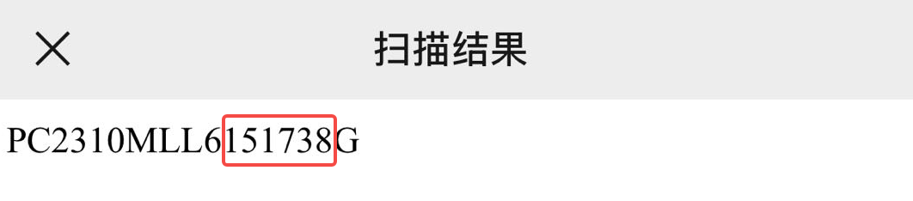

3. 主机与硬件配置¶
夹爪能被列出不等于能被打开——本章解决串口权限、ModemManager 抢占、 设备自动发现规则,并给出硬件上电顺序。
3.1 串口权限 与 3.2 屏蔽 ModemManager 是必做项
两项都是主机侧的一次性配置,做完长期有效。
3.1 串口权限(dialout)¶
夹爪 MCU 枚举为 /dev/ttyACM*,属 dialout 组。若用户不在该组,SDK 能列出夹爪
但打不开串口读固件序列号,于是 scan_grippers() 报 role=Unknown / firmware_sn
为空,连接失败:
RuntimeError: No leader gripper discovered for the left side.
# 底层实为: IoError: SerialBus: open(/dev/serial/by-id/...): Permission denied
一次性加入组,然后重新登录使其生效:
改完组必须重登,否则这一步等于没做
组权限只对新建的登录会话生效——当前终端、已经开着的窗口全都还是旧权限,
直接跑采集程序仍会报 role=Unknown / firmware_sn 为空,看着像是命令没生效。
注销重登(或在当前 shell 执行 newgrp dialout),再重新插拔夹爪,然后往下验证。
验证——role 必须是 Leader/Follower(不是 Unknown),firmware_sn 非空:
python -c "from xense.taccap import scan_grippers
for g in scan_grippers(): print(g.side.name, g.role.name, repr(g.firmware_sn))"
序列号仍为空?
修好权限后 firmware_sn 仍为空,可能是 SN 未烧录、串口读取仍失败、固件通信异常或设备端配置问题;不能只根据空 SN 推断固件版本。保存完整报错并换线 / 换口复测,仍异常时联系设备或固件团队。
3.2 关闭 ModemManager 抢占(udev)¶
用 Docker 交付镜像的话本节已经做过了
install_customer.sh 会把下面这条 udev 规则装到主机上(容器管不了主机的热插拔
规则)。本节留作原理说明和排查参考,不用重做。
夹爪 MCU 是 CH343 USB 串口(1a86:55d2,CDC-ACM)。每次热插拔,ModemManager
(Ubuntu/GNOME 默认的蜂窝调制解调器服务)会用 AT 指令探测新端口并占用几秒,导致这段
时间内连接失败:
IoError: SerialBus: open(/dev/serial/by-id/usb-1a86_USB_Dual_Serial_..-if02): Device or resource busy
典型症状
第一次启动正常(端口已稳定),但拔下→换个 USB 口→立即重启就 busy。
这不是触觉/相机/带宽问题。(若装了盲文驱动 brltty,它也会同样抢占 1a86。)
临时办法:插好后等 ~3 秒再启动。
永久修复——用 udev 规则让 ModemManager 忽略这类设备(不影响真正的调制解调器):
sudo tee /etc/udev/rules.d/99-taccap-ignore-modemmanager.rules >/dev/null <<'EOF'
# XTac-UMI G1 MCUs are CH343 USB-serial (1a86:55d2) — keep ModemManager off them
ACTION=="add|change", SUBSYSTEMS=="usb", ATTRS{idVendor}=="1a86", ENV{ID_MM_DEVICE_IGNORE}="1"
EOF
sudo udevadm control --reload-rules && sudo udevadm trigger
验证:
udevadm info -q property -n /dev/ttyACM0 | grep ID_MM_DEVICE_IGNORE # -> ID_MM_DEVICE_IGNORE=1
mmcli -L # 夹爪不再被列出
删除规则文件并重载即可还原。(专用机器人主机若无蜂窝模块,也可
sudo systemctl disable --now ModemManager。)
3.3 设备自动发现与"单左双右"规则¶
所有设备按序列号 + USB 拓扑自动发现并分配到 left/right,不手写序列号。
序列号语法¶
| 设备 | 语法 | 示例 |
|---|---|---|
| 夹爪 Gripper | TCGU01<batch><line><seq><m\|s> |
TCGU01A24Z0002m |
| 触觉 Tactile | GSPS01<batch><line><seq> |
GSPS01A25Z0011 |
| 相机 Camera | XC<batch><line><seq><m\|s> |
XCA24Z0007m |
<seq> 为 4 位;patch m → leader(主夹爪),s → follower(从夹爪)。
侧别规则(单左双右)¶
4 位序列号的最后一位:奇数 → 左,偶数 → 右。适用于夹爪 / 腕相机的侧别, 以及同一只夹爪上两枚指尖触觉传感器的左右。
触觉左右 → {side}_tactile_{left,right}¶
结合 USB 拓扑与侧别规则:
- 属于哪个夹爪(side):共享同一夹爪 USB hub 的两枚 GSPS 传感器就是该夹爪的一对;
夹爪的侧别读自其固件 SN(即
scan_grippers()输出里的 side),不是 CH343 的mcu_serial。即:hub → 夹爪 → 侧别。 - 哪一枚指尖触觉传感器(left/right):GSPS 序列号的最后一位(单左双右)。
Pico4 Ultra 企业版追踪器——另一套序列号¶
追踪器序列号形如 PC2310MLL3200496G,末尾是字母 G。根据 G 前的那个数字判断:单左双右
——上面这个号 G 前面是 6,双数,所以这枚追踪器在右侧。这个 SN 需要从 PC Service 读取,
头显界面上看不到,见 读取追踪器 SN。
硬件烧错/装错会显式报错
遇到不合规序列号、每侧数量不对、两枚指尖触觉传感器映射到同一侧、两只夹爪抢同一触觉侧别, 或触觉 hub 找不到对应夹爪时,设备发现会直接报错并指明出问题的 hub/序列号, 避免实际装配和数据里的字段悄悄对不上。
先查「挤了两个」的那一侧
某侧为空,通常是它的设备把自己算到了另一侧去了。所以报错会先报重复、再报缺失—— 照着挤了两个的那一侧按上面的侧别规则复核序列号,比去找"不见了"的那只快。
3.4 Pico4 Ultra 企业版配置¶
Pico4 Ultra 企业版配套的独立运动追踪器装在夹爪顶部,提供 6-DoF 位姿。在 Pico4 Ultra 企业版上运行 XTac-UMI XR (VR 客户端 APP),位姿经 XenseVR PC Service 送到采集端。 本节按全新 Pico 从零配置书写,顺序是「开箱与系统更新 → 系统设置 → 安装 APP → 网络连接 → 绑定追踪器 → 追踪模式与界面设置 → 启动对齐」。
拿到的是出厂已配置的头显?跳过前面几节
开发者模式、电源策略、APP 安装、追踪器绑定、追踪模式这些都已在出厂时设好,写在头显里 断电不丢——凡是标着「预配置设备可跳过本节」的都不用看。
直接从 网络连接 开始:接上 USB、短按追踪器电源键到蓝灯亮, 打开 APP 点「重连」、做 启动对齐。这三步 每次采集都要做,预配置与否都一样。
开箱与系统更新¶
预配置设备可跳过本节
本节的设置写在头显里,断电不丢。出厂已配置的设备无需重做——除非恢复出厂设置或更换头显。
1. 开箱:撕掉机身前面板保护贴、控制器胶条与镜片贴纸,长按电源键开机。
{kind=link}
{kind=link}
{kind=link}
{kind=link}
{kind=link}
{kind=link}
2. 更新系统——新机必做:连上有网的 WiFi,进 设置 → 系统升级, 点「下载并安装」升到 5.15.5.U 或更高。安装包约 1.9 GB,留足下载与重启的时间。
{kind=link}
新机必须先升级系统
出厂系统版本偏低,升级之后才能正常使用。请在配对追踪器、装 APP 之前先做完这一步。
系统设置:开发者模式与电源策略¶
预配置设备可跳过本节
本节的设置写在头显里,断电不丢。出厂已配置的设备无需重做——除非恢复出厂设置或更换头显。
1. 开启开发者模式:在 Pico4 Ultra 企业版内打开 设置 → 关于本机 → 连续点击「软件版本号」数次 → 左侧出现「开发者选项」→ 打开 USB 调试。
{kind=link}
{kind=link}
{kind=link}
2. 关闭休眠与灭屏:开发者模式打开后,进入 企业设置 → 系统设置 → 电源策略, 按下面的顺序把两项都改成「永不」:
- 先设 系统休眠 = 永不;
- 再设 灭屏(息屏)= 永不;
- 顺手把最下方的电量及充电状态图标设为「常驻显示」——采集途中能随时看到剩余电量。
开发者选项里点「企业设置」。
{kind=link}
{kind=link}
出厂默认是灭屏 30 秒、系统休眠 5 分钟、电量图标不显示——三项都要改。
{kind=link}
{kind=link}
改完应该和「最终设置」那张一致:灭屏 = 永不、系统休眠 = 永不、电量及充电状态图标 = 常驻显示。
顺序不能反
灭屏时间受系统休眠时间约束。若先改灭屏,系统休眠仍是默认值,灭屏的「永不」会被 钳制回一个有限值(表面看已设置,实际未生效)。先休眠、后灭屏,改完退出设置再回来 确认两项都显示「永不」。
不做这一步的后果:头显在采集间隙自动灭屏/休眠后,XTac-UMI XR 会被系统挂起或杀掉, 追踪数据中断;重启 XTac-UMI XR 又会重新冻结世界系原点与方向,导致同一数据集内位姿参考系不一致 (见 坐标系对齐)。摘下头显放置时同样会触发,所以必须关掉,不能只靠「别摘头显」。
本项在企业设置里,不在普通设置里
「电源策略」只在 Pico 企业版的「企业设置」里;消费版没有这一项,也调不到「永不」。
安装 XTac-UMI XR(Pico4 Ultra 企业版)¶
预配置设备可跳过本节
本节的设置写在头显里,断电不丢。出厂已配置的设备无需重做——除非恢复出厂设置或更换头显。
用 USB 线连接 Pico4 Ultra 企业版与电脑,把 XTac-UMI-XR-0.1.X.apk 拷到头显的
Download/ 目录(0.1.X 是版本号,以你拿到的那份为准)。
{kind=link}
戴上头显,任务栏点「文件管理」,进「Download」文件夹。
{kind=link}
点 XTac-UMI-XR-0.1.X.apk,在弹出的「要安装此应用吗?」里选「安装」。
{kind=link}
装好后回到「资源库」,应该能看到名为 XTac-UMI XR 的应用。
{kind=link}
网络连接(重要)¶
追踪数据要送到数采电脑上的 XenseVR PC Service,有线和无线两种接法都支持:
| 接法 | 说明 |
|---|---|
| USB 有线共享网络(推荐) | 用 Type-C 线直连数采电脑,由头显给电脑分配 IP |
| WiFi 无线 | 头显与数采电脑接入同一个网络,不用接线 |
采集时优先走有线
WiFi 环境复杂时(信道拥挤、干扰多)无线传输会受影响,表现为位姿卡顿、抖动或掉数据, 而且不容易和别的问题区分。有线共享网络更稳定,正式采集建议用它;无线适合临时调试或 不方便接线的场合。
有线连接步骤:
- 在 Pico4 Ultra 企业版内打开 设置 → 开发者选项 → 打开「USB 调试」→「USB 连接」选择「传输文件」。 每次拔插 USB 后都要回来确认这一项——它会掉回默认值。选不了就重启 Pico 再试。
- 电脑端先启动服务(见 §3.5):
runService.sh。 - 打开 XTac-UMI XR,点「重连」,状态变成「已连接」 (见 打开 App 后的界面)。
走 WiFi 时把头显和数采电脑接进同一个网络,其余相同。
服务要在打开 APP 之前起来
服务没起来,APP 只会停在「未连接」——先 runService.sh,再打开 APP。
走有线时,关掉数采电脑的 WiFi
有线共享网络会与电脑上的其他网络(尤其 WiFi)冲突(路由 / 网卡抢占),导致追踪器 连不上或位姿不稳。用有线就把电脑的 WiFi 关掉,只保留头显的共享网络。
{kind=link}
绑定运动追踪器到头显¶
预配置设备可跳过本节
本节的设置写在头显里,断电不丢。出厂已配置的设备无需重做——除非恢复出厂设置或更换头显。
首次使用、或更换追踪器后,必须先把 PICO Motion Tracker 绑定到这台头显。 未绑定时,追踪模式里选不到它,XTac-UMI XR 与 PC Service 也发现不了对应 SN。
配对前先用手机扫追踪器背面的二维码拿到 SN
扫出来的就是这枚追踪器的完整 SN,配对时可以直接核对,不用等装好了再去 PC Service 查。 装的时候按 SN 对应侧别(单左双右,见 3.3):单数装左夹爪,双数装右夹爪。
| 扫这里 | 扫出来是这样 |
|---|---|
 |
 G 前是 1,单数 → 装左夹爪 G 前是 8,双数 → 装右夹爪 |
{kind=link}
{kind=link}
{kind=link}
红框圈出的六位数,就是配对后「我的追踪器」列表里显示的编号(如 Tracker 150311)——
列表里哪一项对应哪一枚,靠这六位数对上。
- 从 资源库 打开「体感追踪器」App,进入配对界面。
- 长按追踪器电源键约 6 秒,直到指示灯蓝红交替闪烁——这是蓝牙配对状态 (只亮蓝灯是普通开机,不是配对状态,App 扫不到)。
- 在配对界面点「开始配对」,等待绑定完成。配对成功时头显会响一声提示音——听到提示音
就表示绑上了。该追踪器随即出现在「我的追踪器」列表里,显示电量与编号
(如
Tracker 150399)并标注「已连接」。 - 两只夹爪各一枚,需要绑定两枚。列表顶部应显示「已配对 2 个」。
开机是短按,配对才要长按
日常开机短按电源键,蓝灯亮起即可;只有首次绑定才长按约 6 秒到蓝红交替闪烁。
{kind=link}
{kind=link}
{kind=link}
绑定是一次性的;解除配对在 ⓘ 里
绑定关系保存在头显上,日常开关机、重启 APP 不需要重绑; 更换追踪器、换用另一台头显或头显恢复出厂设置后需要重新绑定。 更换设备时先在列表项右侧的 ⓘ 中解除配对,再绑新的。
独立追踪模式下,追踪器必须在头显视野内
App 自身也会提示这一点。追踪器被身体、桌沿或另一只手长时间遮挡会丢跟踪, 表现为位姿跳变或卡住。采集时注意作业姿态,别让夹爪顶部的追踪器长时间脱离头显视野。
读取追踪器 SN¶
SN 决定左右(末尾字母 G 前一个数字:单左双右,见 3.3),也是 PC Service 识别追踪器的依据。
头显里看不到这个 SN:「体感追踪器」App 只显示短编号(如 Tracker 150399),
XTac-UMI XR 的 Network 面板显示的 SN(如 PA9410MGL…)是头显自己的。
匹配左右要用的追踪器完整 SN(形如 PC2310MLL3200496G)用 PC Service 的 Python 接口
xensevr_pc_service_sdk 读取:
import xensevr_pc_service_sdk as xrt
xrt.init()
print(xrt.get_motion_tracker_serial_numbers()) # 例:['PC2310MLL3200496G', ...]
读 SN 需要整条链路先跑起来
get_motion_tracker_serial_numbers() 报的是服务当前收到数据的追踪器。
所以要先:追踪器已绑定并开机 → XTac-UMI XR 显示「已连接」
→ 主机已启动 XenseVR PC Service。少任一步,返回的会是空列表。
拿到 SN 后可用 --robot.tracker_serial=<SN> 直接钉住,跳过自动匹配。
逐个摇晃夹爪确认哪个 SN 对应哪只手,再写进配置。
追踪模式与 XTac-UMI XR 设置¶
预配置设备可跳过本节
本节的设置写在头显里,断电不丢。出厂已配置的设备无需重做——除非恢复出厂设置或更换头显。
绑定完成后:
- 在 Pico4 Ultra 企业版里打开「体感追踪」。
- 进入设置,追踪模式选「独立追踪」。
出厂默认是「全身动捕」——把追踪器戴在身上追人体姿态,不是我们要的。
{kind=link}
「独立追踪」是把追踪器固定在物体上追物体的位姿——夹爪就属于这种用法。 选中后点「确定」。
{kind=link}
「追踪模式」这一行应该显示「独立追踪」。
{kind=link}
追踪器由 XenseVR PC Service 按序列号(SN)识别;侧别按 SN 末尾字母 G 前一个数字单左双右自动匹配
(见 3.3),或用 --robot.tracker_serial=<SN> 直接钉住。
打开 App 后的界面¶
戴上头显,从资源库打开 XTac-UMI XR。界面很简单,只有状态、分辨率、 重连三项(左边的「折叠」把面板收起来)。要的就是「状态」显示「已连接」—— 在那之前 PC 端读不到任何位姿。
不用填 PC 端 IP:有线共享网络接好后,APP 会自动识别主机上的 XenseVR PC Service——但要点一下「重连」才会连上,打开 APP 不会自动连。
从资源库点开 XTac-UMI XR。
{kind=link}
刚打开时是「状态:未连接」。点一下「重连」才会连——它不会自己连上,等多久都没用。
{kind=link}
首次打开会问「允许"XTac-UMI XR"使用相机权限吗?」,点「允许」。 头显相机要用到它,点了「不允许」就取不到头显画面。
{kind=link}
「状态:已连接」就是可以开始采集的状态。
{kind=link}
「分辨率」是头显双目相机的分辨率
头显相机的取流分辨率,三档 640 / 1024 / 1280,
默认 640(每眼 640x480),推荐就用这一档。不用头显相机时它不起作用。
采集端的默认值也是 640x480,两边开箱即对得上。在这里调高了档位,采集命令要跟着改:
选 1024 加 --robot.head_camera_width=1024 --robot.head_camera_height=768,选 1280 加
--robot.head_camera_width=1280 --robot.head_camera_height=960,否则 connect 会报首帧尺寸
不符。见 5.6 头显相机。
高精度追踪已默认常开
高精度追踪模式(位姿更稳、抖动更小)现在默认开启,界面上没有开关,不需要手动设置。
一直连不上?先查网络这一步
多半不在 APP,而在网络连接:有线网没接好,或电脑 WiFi 没关。
自检:PC 端有没有真的收到
显示「已连接」之后,在主机上用 /opt/apps/roboticsservice/ 的 ConsoleDemo 或
python -m lerobot.robots.taccap_gripper.check_tracker 确认能读到带 sn 的位姿——
头显里显示连上,和主机真的收到数据,是两件事。
启动与坐标系对齐¶
佩戴 Pico4 Ultra 企业版启动 XTac-UMI XR 时,面朝机器人正前方,再 点「重连」把状态连成「已连接」。启动瞬间冻结世界系的原点与方向。
录制位姿落在重力对齐的世界系:X 正 = 面朝前方,Y 正 = 左,Z 正 = 上。
下图画的就是这个世界系——原点在启动那一刻头显所在的位置,三根轴按 红 = X(前)、绿 = Y(左)、蓝 = Z(上):
{kind=link}
图里的坐标系是画在头显上的,但它只在启动那一瞬间跟着头显——冻结之后就固定在空间里,
之后你转头、走动都不会带着它动。数据集里所有 tcp.* 位姿都以这个固定的系为参考。
启动时必须面朝机器人正前方
这样世界系 X 轴才对齐机器人正前方。只需对齐方向,站在哪个位置不影响。
分集之间不要重启 XTac-UMI XR
一旦重启,后续录制的原点/方向会变,导致同一数据集内位姿参考系不一致。
3.5 启动 XenseVR PC Service¶
追踪器与主机的 XenseVR PC Service(RoboticsService)守护进程通信;它负责设备发现、 状态监控与实时追踪数据分发,采集端从它读取位姿。
用 Docker 交付镜像的话服务会自动启动
容器启动时会自己拉起这个服务,不用手动执行下面的命令。只处理数据、用不到追踪器时,
可以用 START_XENSEVR_SERVICE=0 关掉(见 2. 环境部署 · Docker)。
启动:
同一时间只能运行一个实例
该服务一次只允许运行一个实例;重复启动会失败或冲突。
服务可提供多类追踪数据(Pico4 Ultra 企业版 Head / 手柄 / 手势 / 全身动捕 / Tracker 独立追踪)。 数采用到其中两类:
- Tracker 独立追踪位姿——夹爪的位姿,数据中带
sn用于区分不同追踪器。 - 头部位姿——头显自己的位姿,和头显双目画面配套使用。
头显相机与头部位姿也走这个服务
它们不是另一条链路:头显把每只眼的画面和自己的位姿发给 PC Service,服务转发给采集端。 和追踪器共用同一个服务、同一条连接——服务没起来,两者都没有。
要用这一路,只需两件事:服务升到 v0.2.0 以上(见 2.4 一键安装)、 头显里装上 XTac-UMI XR。只用追踪器的话,服务版本没有区别。
验证服务与设备
服务目录附带 ConsoleDemo / RobotDemoQt 演示程序(/opt/apps/roboticsservice/),
可用于确认 Pico4 Ultra 企业版已被发现、追踪数据正常(需与服务相同的运行环境)。
3.6 硬件上电顺序¶
启动顺序
标准启动顺序如下(APP 界面以实际版本为准):
- 将 XTac-UMI G1 插入主机(USB)。
- 双夹爪:先查一下 USB 带宽预算(见下),再往后走。
- 接好 Pico4 Ultra 企业版的有线共享网络,并关闭数采电脑的 WiFi(见 3.4 网络连接)。
- 开启 Pico4 Ultra 企业版,短按追踪器电源键至蓝灯亮起(首次使用需先绑定)。
- 启动主机的 XenseVR PC Service(
runService.sh)。 - 面朝机器人正前方,启动 XTac-UMI XR APP(冻结世界系原点与方向,见 坐标系), 点「重连」使状态变为「已连接」。
- 运行标定 / 自检 / 录制脚本。
flowchart LR
A[插入夹爪 USB] --> U[双夹爪:查 USB 带宽预算]
U --> N[接 Pico4 Ultra 企业版<br/>有线网络并关闭 WiFi]
N --> B[开启 Pico4 Ultra 企业版<br/>配对追踪器]
B --> D[启动 XenseVR PC Service]
D --> C[启动 XTac-UMI XR<br/>冻结原点、显示已连接]
C --> E[跑标定/录制]第 5 步必须在第 6 步之前
服务没起来,APP 只会停在「未连接」——重启 APP 重连还会把世界系原点重设一次。
主夹爪没标定的话,采集程序会拒绝连接
数据集里的 gripper.pos 是归一化开度(0.0 闭合 / 1.0 张开),这两个端点来自写在
MCU flash 里的编码器零点和行程上限。没标过行程上限的主夹爪连不上,程序会
带着标定命令报错退出——所以不用自己判断该不该标,能连上就是标过了。
标定值存在 flash 里,断电不丢、换主机也不用重标,一台标一次就够,不是每次开录的例行步骤。
双夹爪尤其注意:只标一侧会让左右两条通道落在不同刻度上,同一个握持动作左右读数不同, 而数据里看不出任何异常。要标就两侧都标:
python third_party/taccap-gripper/python/examples/calibrate.py left
python third_party/taccap-gripper/python/examples/calibrate.py right
完整步骤、如何确认生效、适用范围 → 4.1 夹爪标定(零点 + 行程)
第 2 步:查 USB 带宽预算¶
放在这里,是因为它在插线那一刻就已经决定了,而它决定的是"某一路相机能不能打开"。 相机打不开时,从序列号、线缆、驱动、采集程序一路往回找都是白找——先量这一步。
每个 UVC 相机在打开期间都要独占预留一份等时带宽,这份预算按 USB 2.0 总线算: 一条总线 480 Mbit/s,其中约 384 Mbit/s 给等时传输。双夹爪一共 六个相机 (四路触觉 + 两路腕相机),再加笔记本自带的摄像头。
输出里每一行 480M 的 root_hub 就是一份预算——数一数每份上挂了几个相机。
两条 480M 总线各挂三个是宽裕的;六个挤在一条上就得实测,不同批次的传感器申请量不同,
有的机器扛得住、有的扛不住。
插蓝色 USB 3 口不解决问题
触觉和腕相机都是 USB 2.0 设备,插进 USB 3 口仍然落在该控制器的 USB 2.0 总线上。 要分开就得插到另一个主控制器上(Thunderbolt / USB4 扩展坞自带一个,普通 hub 不带)。
启动采集时在另一个终端盯着内核日志,一眼看出是不是带宽:
出现 Not enough bandwidth for altsetting N 就是它。完整的判定、实测数字,以及三条看着像
解法其实没用的办法 → 故障排查 · USB 带宽不够。
下一步 → 4. 标定与自检